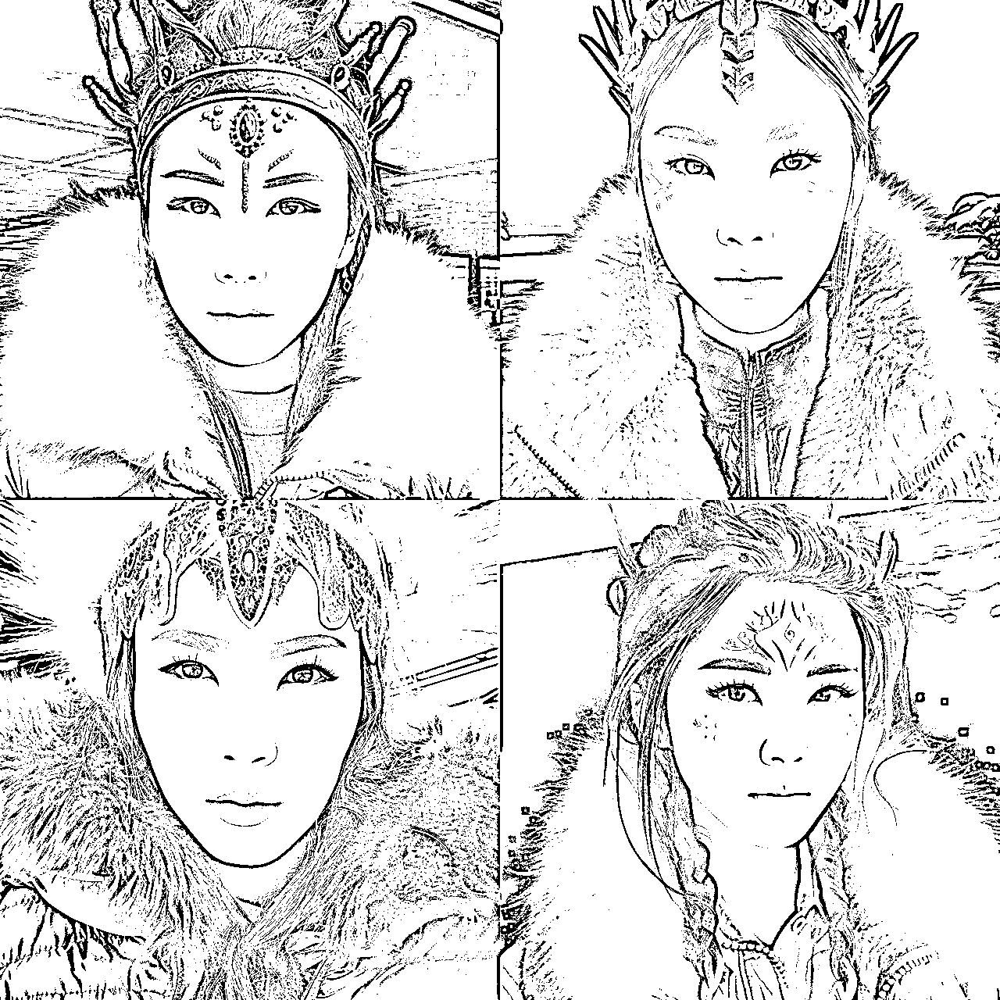

来源：https://zf8mp27jub.feishu.cn/docx/RFRpdNbcOoN9NqxjlUJcEgB7nTc
Yo！这里是木木｜终身成长践行者，生财领队，AI绘画航海教练。
我热衷于探索和挑战新事物，同时也喜欢分享我的经验和知识。相信你也和我一样，有着无限的潜力，我会尽我所能，帮助你发掘并实现自己的梦想。我们一起成为更好的自己吧！（这段话，感谢Notion AI替我发声）
这段时间，AI技术发展迅猛，gpt的语言表达已经可以看出来了，而AI绘画技术也非常厉害，不需要懂得太多美术知识，只需要使用一些工具，就可以轻松地制作出个性化的图片。
今天，木木想和大家分享一些个人头像制作的内容，你可以使用自己的照片和选择不同的风格和背景结合来制作头像。之所以从头像入手，是因为：
可爱的
帅气的
漂亮的
还是搞笑的
不论哪种形象都可以让你更好地展示自己；自己做出来的头像，还可以提高你的创意和艺术感。
现阶段，谁还没几个马甲，同一个平台有不同的小马甲，不同的平台又是不同的风格，不同的风格肯定要搭配不同的头像🤩
想当年，我换头像和换网名，比喝水还要频繁，那时候百度就是我的素材库
而现在，感谢AI绘画，感谢我自己学会AI绘画，可以给我提供一个无限创意的素材库
而用AI工具制作个性化的头像，现在是非常简单、有趣的事情。通过制作头像，你不仅可以展示自己的创意和艺术感，还可以与他人分享你的想法和情感，更可以让你的朋友圈内容更加丰富多彩，顺便，也可以赚点钱。
本篇文章使用的AI绘画工具是Midjourney（以下简称MJ），如果你还不会使用MJ，建议你先学习5月的AI绘画航海手册https://search01.shengcaiyoushu.com/docx/S38TdhmTsosK6Uxlo9tcYec9nxh，进行一个初步的了解。
本篇文章目录如下：
一、垫图的使用方法
二、用自己的照片制作AI头像
三、图像权重参数--iw的说明
四、头像变现+NotionAI辅助工具的结合玩法
垫图是让我们做出一张图的一种辅助方式，就是把一张图当成底稿图，在这个图的基础上生成图像。
我们可以用垫图的方式，给自己一个创意方向或者思路，也可以直接生成和自己底图相关的图，做为自己的头像或者个人IP形象图。
我们先来学习一下MJ的垫图方法
具体的操作步骤：
第一步：选择对话框中的“+”，
第二步：点击“上传文件”，
第三步：选择你想要参考的图片，
第四步：按你的键盘中的“Enter”回车键，发送图片
记得，一定要按回车键发送出去，才能获取到图片链接哦
左键单击图片，在图片上单击右键，选择“复制链接”
发送后，意味着图片上传成功。在你上传的图上面，点击鼠标右键，复制链接，这个链接就是你垫图需要的关键词链接。
按照输入关键词的方式
输入“/”
选择“imagine”
在 prompt后面，输入：【粘贴刚刚复制的链接】+【空格键】+【你想要的词】
记得链接和词之间，一定要有一个【空格】
好啦，学习过后，我们来开始今天的个人头像的制作。
接下来，整篇文章都会以这个原图为主，来垫图制作头像，
我的原图
来，先根据『一、垫图的使用方法』，把图上传到MJ，获取链接，我们就开始啦~
先来试试最简单的关键词组合方式，
【链接】+【一个词】
关键词：
【链接】 可爱的女孩
https://s.mj.run/kFL3LfH0HDI Lovely girl --v 5.1
我们来看看图
这里解释一下，Midjourney的出图是一次出4张图，
↖左上为图1，↗右上为图2
↙左下为图3，↘右下为图4
对于上面的图，我个人还是比较满意的，
虽然，图2和图4，把我原图的衣领颜色变成了头发颜色，但是也还不错，
我们再来换个风格，之前有点火的赛博朋克风格，
关键词：
【链接】 赛博朋克，女孩
https://s.mj.run/kFL3LfH0HDI cyberpunk,girl --v 5.1
呃，这可能是眉毛被朋克了，确定那不是两个毛毛虫吗差评，我还是不喜欢这个风格，必须要换一个
这次要做一个美美的迪斯尼乐园里面的冰雪女王，
这里我的关键词组合是，【链接】+【场景】+【描述词】
【链接】 迪士尼，冰雪女王
https://s.mj.run/kFL3LfH0HDI Disney, Ice Queen --v 5.1
可以看出来，人物并没有那么精致，冰雪女王的感觉有一些出来了，比如
蓝色的衣服
白色的头发
雪花❄
那么我们再来加个词看看，人物会不会更精致一些，接下来我要加个词，人物形象Characters，
【链接】+【人物形象】+【场景，描述词】
https://s.mj.run/kFL3LfH0HDI Characters, Disney, Ice Queen --v 5.1
来看看效果
咱们继续，再来替换个词，我们是要做头像的，就干脆的用“头像”来，做个适合头像的图，还是迪士尼，冰雪女王
【链接】+【头像】+【场景，描述词】
https://s.mj.run/kFL3LfH0HDI Avatar, Disney, Ice Queen --v 5.1

有没有发现，加上【头像】后，这就是标准的头像风格了，且多数图都是正面图，
AI绘画的有趣之处，就是，加个词，加个场景，出来的图都不一样，这个探索的过程非常有趣，
接下来，就进入到木木的探索时间啦，在探索期间，我会根据自己的需求和出图效果来调整关键词，
【链接】头像，可爱的中国女孩，在书屋里
https://s.mj.run/kFL3LfH0HDI Avatar, lovely Chinese girl, in the library--v 5.1
还是可以的，我想要再多来点未来科技的感觉，再多个词来试试，
【链接】 头像，可爱的中国女孩，在未来科技的虚拟书屋
https://s.mj.run/kFL3LfH0HDI Avatar, cute Chinese girl, in the virtual library of future technology --v 5.1
Ai理解的科技就是有耳机，
对虚拟的理解就是人物有点机器人的感觉，但是不多，
Tips：我们在写词的时候，对词语表达要准确和直白，AI理解不了那么复杂或者抽象的概念。比如，
不要写：今天的天气真好，
而是要写：蓝天，白云
静态的我们试过了，可以让头像有动起来的感觉吗？来试试看，比如我一直想要运动跑步，心一直在路上，身上一直跟不上，那么我们就来做一个奔跑的头像鼓励一下自己，也给外界释放一个虚拟的信号，我喜欢运动。
在做图之前，要先明白自己想要一个什么样的画面，比如：我想要有点动漫的感觉。
最近日本动画《铃芽之旅》很火呀，百度了一下它是由CoMix Wave Films操盘的，还有之前很火的《你的名字》也是这个工作室制作的。
（以下内容来自百度百科）
CoMix Wave Films，成立于2007年3月，是一家从事策划、制作动画电影、版权管理等业务的日本动画工作室。
动画制作的代表作有：
你的名字。(君の名は。)
这个男人、工作是魔法
旅街晚间秀
「太可惜了」改变未来
天气之子(天気の子)
铃芽之旅（すずめの戸締まり）
《你的名字》我看过，还是不错的，那我们就来试试，用这个工作室和这个动画片为参考给我做头像，会做出什么样的图。
【链接】 头像，一个可爱的小女孩，在奔跑中，来自CoMix Wave Films，你的名字〔我这里直接用的日文，怕翻译错误，省事〕
https://s.mj.run/kFL3LfH0HDI Avatar, a lovely little girl, on the run,by CoMix Wave Films，君の名は --v 5.1
图1有点感觉了，但是整体来看，有跑的姿态了，但是跑的感觉不多。
因为我的原图是坐着的，我们再减少一些原图参照的权重，用“--iw”这个参数来试一下，在关键词我也加上了一个词，日本动漫电影风格
【链接】 头像，一个可爱的小女孩，在奔跑中，来自CoMix Wave Films，你的名字，日本动漫电影风格
https://s.mj.run/kFL3LfH0HDI Avatar，a cute little girl, on the run,by CoMix Wave Films，君の名は Japanese anime film style --iw 0.5 --ar 2:3 --v 5.1
你看，跑起来了~
继续再来个3D风格的，
【链接】 简单的虚拟化身，3D渲染效果，一个可爱的中国小女孩，头像
https://s.mj.run/kFL3LfH0HDI Simple avatar, 3D rendering effect, a cute little Chinese girl, avatar --v 5.1
另外的可爱～3D的效果还可以哇，看到3D，就想来个泡泡玛特风格的，别问为什么，这是来自木木的联想～
【链接】 由泡泡玛特推出的超可爱机甲女孩IP，《春日场景》，椭圆脸、精致的鼻子、粉彩色、模拟图、细腻的光泽、干净的背景、梦幻之地、3D渲染、柔和的聚焦、原创、Blender、最佳品质、8k
https://s.mj.run/kFL3LfH0HDI super cute Mecha girl IP by pop mart, Scenes in spring,Oval face, delicate nose,pastel color, mockup, fine luster,clean background,dreamland,3D render, Soft focus, oc, blender, best quality,8k --v 5.1
不错不错，我想再试试，让AI少参考一些原图，看看会出什么，这里就要用到：--iw这个参数了，咱们进入第三部分，
图像权重，就是“--iw”+“数字”这个参数，
在V5和Niji 5里，iw后面的这个数字范围是0.5-2，默认值为 1，
在V3里，iw后面的数字范围是不限制的，默认值为 0.25,
在初始版本里，是支持的。其他没提到的版本，比如V2、V4、NIJI、Test /Testp就是不支持哈。写这个--iw 参数，是不兼容的，不会出图的哈。
对于iw这个参数，官方的解释是，Sets image prompt weight relative to text weight，翻译一下：设置图像提示的权重与文本权重相对应。
这句话指的是在与图像一起出现的文本中，图像提示相对于文本的重要性或影响力。
给予图像提示更高的权重意味着它比文本更重要或更有影响力，比如--iw 2。
而给予图像提示更低的权重则表示文本更为重要，比如--iw 0.5。
咱们继续来看看iw对图的影响，我的参数值是--iw 0.5，其他的还是上面的词一样，来看看效果
【链接】 由泡泡玛特推出的超可爱机甲女孩IP，《春日场景》，椭圆脸、精致的鼻子、粉彩色、模拟图、细腻的光泽、干净的背景、梦幻之地、3D渲染、柔和的聚焦、原创、Blender、最佳品质、8k
https://s.mj.run/kFL3LfH0HDI super cute Mecha girl IP by pop mart, Scenes in spring,Oval face, delicate nose,pastel color, mockup, fine luster,clean background,dreamland,3D render, Soft focus, oc, blender, best quality,8k --iw 0.5 --v 5.1
图4，我是很喜欢的
再来换个极简风格的，用一下niji的风格看看（词来自@饼公子）
【链接】轻黑色和粉色的粗轮廓线，简洁的线条，可爱的少女，可爱的脸庞，白色的头发，白色的背景，简单，干净，极简主义，微笑，白色的背景，简单，干净，极简主义，简单，干净，极简主义，简单，干净，极简主义，
https://s.mj.run/kFL3LfH0HDI Light black and pink thick contours line,Simple lines，cute maiden,cute face,white hair, white background，Simple, clean, minimalist，smile,white background，Simple, clean, minimalist，Simple, clean, minimalist，Simple, clean, minimalist，Simple, clean, minimalist, --iw 0.5 --niji 5 --style cute
依旧是喜欢图4~
再来个没有iw 参数的，看看我的原图的效果
【链接】轻黑色和粉色的粗轮廓线，简洁的线条，可爱的少女，可爱的脸庞，白色的头发，白色的背景，简单，干净，极简主义，微笑，白色的背景，简单，干净，极简主义，简单，干净，极简主义，简单，干净，极简主义，
https://s.mj.run/kFL3LfH0HDI Light black and pink thick outline, simple lines, cute girl, oval face, white hair, white background, simple, clean, minimalist, smile, avatar, anime style --niji 5 --style cute

图1和图4，爱了。图2和图3可能是吃胖的木木～
木木做图最喜欢的是“懒人模式”，现在开启懒人模式啦，看看懒人思维。做法就是我们可以去Mj 的画廊看图，在画廊看到你喜欢的图片，直接复制关键词和我们的链接组合。
我去找了一个图，粘贴到我的原图链接，我们来看看会发生什么。下面是画廊里的原图
关键词是：
1950's cyberpunk fusion. Neo-noir atmosphere. In the style of medium brush on paper. In the style of crisp, neo pop portraits. In the style of black and white with colorful washes. In the style of Agnes Cecile. Detailed face, detailed hair, detailed clothing. A street samurai in cyberpunk styled armor. Stylized splashes of indigo blue and crimson red.--s 800 --ar 4:7
我用了Notion AI把词翻译成中文，我们来看看：
1950年代的赛博朋克融合。新黑色氛围。采用中等笔刷在纸上的风格。采用清晰、新流行肖像画风格。采用黑白色彩和丰富的水洗色彩。采用Agnes Cecile的风格。详细的面部，详细的头发，详细的服装。赛博朋克风格盔甲的街头武士。风格化的靛蓝色和深红色的飞溅。--s 800 --ar 4:7
现在，我们不改动任何词，只需要在词的前面，加上我的图片链接，来看看会出现什么图片
https://s.mj.run/kFL3LfH0HDI 1950's cyberpunk fusion. Neo-noir atmosphere. In the style of medium brush on paper. In the style of crisp, neo pop portraits. In the style of black and white with colorful washes. In the style of Agnes Cecile. Detailed face, detailed hair, detailed clothing. A street samurai in cyberpunk styled armor. Stylized splashes of indigo blue and crimson red.--s 800 --ar 4:7 --v 5.1
原图：词里的蓝色在头发上出现了，黑色氛围展示在衣服上了，
我的图：词里的蓝色变成衣服颜色，黑色变成头发了
随机性比较多，因为关键词里没有固定头发的颜色，衣服的颜色，所以AI就把颜色自动随机填充了~
不改变词，只去掉--s 800 --ar 4:7 ，降低一下图片的权重，加上--iw，再看看
https://s.mj.run/kFL3LfH0HDI 1950's cyberpunk fusion. Neo-noir atmosphere. In the style of medium brush on paper. In the style of crisp, neo pop portraits. In the style of black and white with colorful washes. In the style of Agnes Cecile. Detailed face, detailed hair, detailed clothing. A street samurai in cyberpunk styled armor. Stylized splashes of indigo blue and crimson red.--iw 0.5 --v 5.1
图1，我还是蛮喜欢的，哈哈，图3的发型，有点非主流的感觉
木木的探索时间就到此结束啦，这一个探索，收获了好多个不同风格的头像，简直不要太幸福了，可以来回换着玩了。
图片的风格，可以是多样的，并不局限于上面说的这些，你也可以将你的照片转化为不同的风格，如卡通风格、水彩风格等等。
那么，熟悉了怎么制作头像，在小红书和抖音或者朋友圈等平台，咱们就可以去找对标发文引流，接定制单了哦~
关于如何在小红书等平台寻找对标帐号，发布图文，大家可以在星球里搜索相关的帖子，或者可以看实战的航海手册会更细致。
以下是一些接单前的小细节建议，希望对大家有所帮助。
我们要知道，图片比文字的冲击力要大。图片可以通过视觉直接影响人的情感和思考，而文字需要通过阅读和理解才能产生类似的效果。
例如，当我们在餐厅吃饭的时候会发现，我们可能会注意到更好、更大的餐厅的菜单更加复杂，不仅有文字，还有插图，菜单图文并茂的展示了餐厅的特色，会让我们下意识地点许多菜，感觉好像自己已经在品尝美味佳肴了呢。
而我在接定制单和客户聊天的过程中发现，文字的沟通也不如图片的沟通效果好，且大多数人其实是不知道自己想要什么样的图片，或者不知道我们可以提供哪些风格的图片。这个时候，如果有一个『菜单』就可以解决这个问题。
让客户去做『选择题』，顾客可以在“菜单”中勾选自己想要的画面，而且做『选择题』比做『问答题』要轻松很多，对于『菜单』中没有体现的部分再做单独的沟通，这样可以减少双方沟通时间和成本，从而快速出图赚取定制费。
那么对于我们做头像来说，这个『菜单』上应该提供哪些内容呢？下面可以供参考：
当然，以上内容，并不是都需要加，可以根据自己的能力逐步添加，前期可从几个简单的风格或者热门图开始接定制。
对于菜单上的文字方面的细节，如一幅画的具体风格，表情和脸型等，如果不是特别清楚具体的细分，我们可以进行百度搜索，或者是借助最近热门的AI智能语言模型来辅助。
因为openAI NEW chat（也称chatgpt）限制比较多，我用的是NotionAI，不需要VVV就可以使用，来看看它的功能
当我问它眼睛的颜色都有哪些时，它的回答：
当我问它人物的表情都有哪些时，它的回答：
当我问它人物的脸型都有哪些时，它的回答：
当我问它人物的五官都有哪些，并要求它对“眼睛大小”进行详细描述时，它的回答：
最后一张图，因为时间的原因，我还没让AI帮我写完，如果想让它继续写，可以选中想要扩写的词，让它继续编写就可以；也可以给出一句话，它就可以写出相应的要求，等待时间也不长，非常快~
接着，就需要来把上面的内容转化成可以勾选的表格『菜单』，这里我用的是Notion 的待办清单功能，方便客户勾选（当然，我们做成excel表格也可以，怎么方便怎么来哈），
具体操作方法：
将上面我们批量产生出的文字，复制到想要画的表格中，它可以批量的把文字转换成你想要的格式
全选内容，选择“转化成”——“待办清单”即可，
你看，只需要一秒钟就可以在文字的前面加上『□』
也可以随意拖动，把它调整成你喜欢的宽度
总之，这个工具非常好用，在这里推荐给大家~
Notion有2个功能
Notion是一种全新的协作工具，可以帮助团队更好地协作。它可以被用于笔记、项目管理、知识库、文档管理等等。
这个功能可以直接免费使用，但是也有付费的，付费的功能更全面，下图是每个版本的功能和费用对比👇
Notion AI功能有20次免费使用，超出了就需要收费啦，费用为 $192 每年。当然，关于价钱，万能的淘宝，总会解决很多问题，这个价格可以有超级大的浮动，大家可以自己去寻找一下哈。
关于MJ做图：
不同的词，不同的场景，有不同的效果。这个过程是十分有趣的，大家可以在词的基础上，换成自己喜欢的衣服，喜欢的颜色，加些自己喜欢的单品或者宠物等等。
没有固定的关键词，只有放飞的思维~
关于工具：
适合自己的才是最好的。善用工具，放大工具的优点，发挥工具的作用，强强联合使用，才能提高做事效率，才是我们身为制造者的应有思维。
木木的分享就到此结束啦，期待大家也开启自己的头像探索，画出属于自己的独一无二的个人IP头像，也解锁定制头像的赚钱之路~
另外，木木在星球换名字和头像了哦~
来和大家同步一下，哈哈，头像用的就是我AI生成的图片，名字是：依琳，未来依琳和你一起同行。